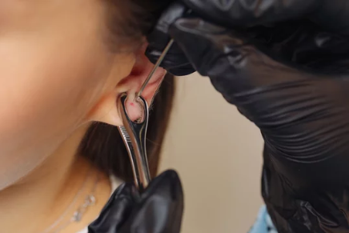
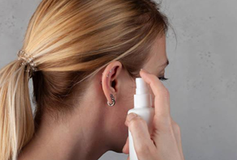
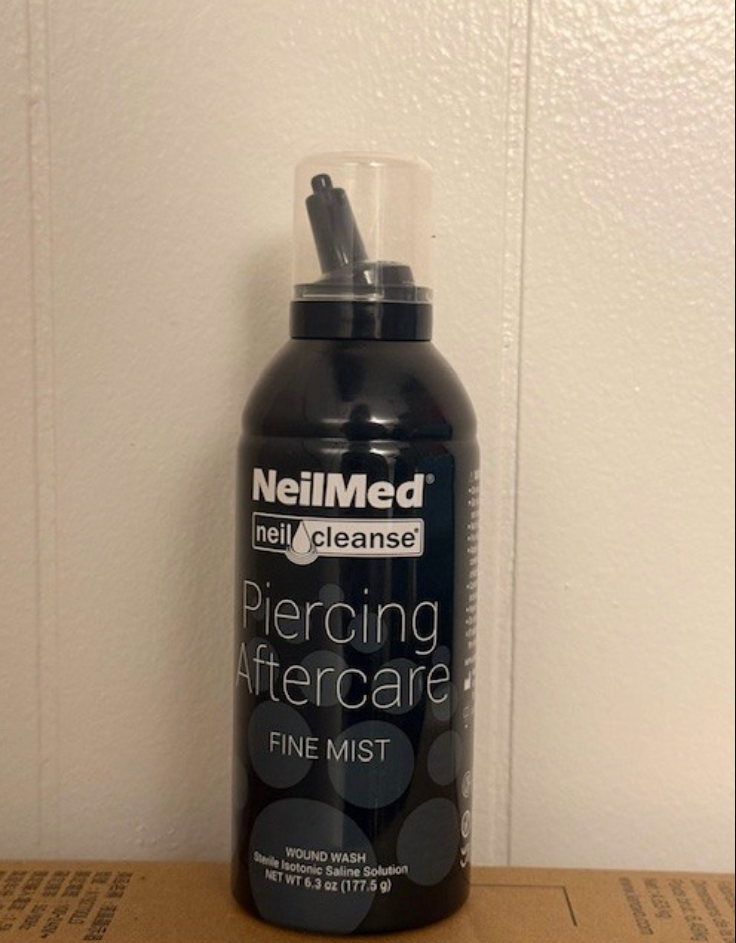

FINDING A REPUTABLE PIERCER
Getting a piercing on your own opens a variety of ways to obtain one. Sure, you may have walked past a Claire’s or investigated a shiny jewelry stand in the mall that offers a piercing service usually done with a piercing gun. However, this is one of the most dangerous and least recommended methods by reputable piercers, as it is easy to damage cartilage and is more painful. A reputable piercer is someone who has obtained a Bloodborne Pathogens Certification (BPP), a body piercing license, and has trained through an apprenticeship. These standards ensure that your piercer uses a sterilized needle and keeps you safe in the piercing process.
JEWLERY TYPES
Reputable piercing shops typically offer jewelry made from implant-grade titanium, implant grade stainless steel, and solid gold. Implant-grade titanium is considered the safest option because it is lightweight, corrosion-resistant, and truly hypoallergenic, making it ideal for initial piercings. Implant-grade stainless steel is widely used and safe for many people, but it may contain trace amounts of nickel, which can cause irritation in individuals with metal sensitivities. Solid gold jewelry (14k–18k) is also safe for piercings when it is nickel-free and not gold-plated. Our bodies don’t always react to metals the same way, and it is possible to be allergic to metals. I learned the hard way after many years of attempting to heal my piercings with gold jewelry, only later finding out through a patch test, that I was allergic! My advice would be to spend your money on high quality jewelry, starting off with surgical steel or titanium.


RESPONSIBILITIES

Piercing aftercare remains relatively consistent across all earring types, beginning with cleaning the piercing 1–2 times daily using a sterile saline solution and gauze to gently remove buildup and reduce the risk of infection. A highly recommended brand is NeilMed’s Piercing Aftercare Fine Mist solution. Before spraying, always wash your hands before touching the area, and avoid twisting or rotating the jewelry too much, as excess movement can delay healing. It’s also best not to sleep on the piercing and keep hair, masks, and earbuds away from the area when possible. Proper aftercare and patience are essential, as even piercings that appear healed on the outside may still be healing internally.
